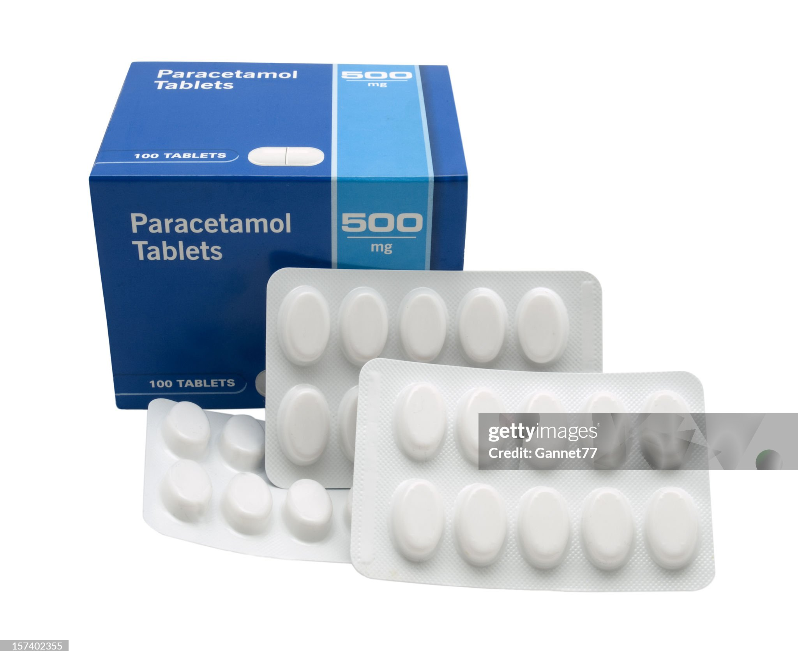

medications

Aspirin
100

Ibuprofen
70

Omeprazole
310

Paracetamol
65
Metformin
40
Lisinopril
120

Atorvastatin
670
Levothyroxine
100
Amoxicillin
1100
Cetirizine
70
Losartan
95

Amlodipine
200
Clopidogrel
160
Pantoprazole
630
Antihistamine
550

codeine phosphate
150
Medical supplies

Face Masks
300

Bandages
100

First Aid Kit
220

Cold and Hot Packs
200

Sterile Pads
100

Hydogen Peroxide
50

Syringe
400

Hand sanitizers
400

Elbow Plasts
120

Knee Plasts
100
syringe
450

Forceps
170

scissors
500

Wheelchairs
4500

Canes
500

Crutches
1000
Home Health Care

Zandu Balm
145

Eye and Ear Drops
50

Moov
160

Vicks VapoRub
150

Vicks Inhaler
120

Dettol
220

Burnol
60

Cold and hot packs
200
Medical Devices

Thermometer
300

Glucometer
1000

Eco-Test Rapid Test
1000

Blood Pressure Monitor
1080

Pulse Oximeters
2000
Personal Care & Hygiene
Himayalan Face Wash
100
Mamaearth Hair Oil
180
Minimalist Salicyclic Acid
590
Denver
210

Wild Stone
600
Sunscreen
299

Beard Oil
390

Hair Cream
450
Vaseline Body Lotion
440
TRESemmé Shampoo
150

Listerine Mouthwash
185
Fogg Spray
220

Himalaya Baby Lotion
180
Sanitary Pads
300
Baby Joy Diapers
300

Olive Hair Oil
200
Sanitary Pads
300
Nutrition & Wellness

MuscleBlaze
2499

Creatine
1250

Electrolyte Powders
2800

Peanut Butter
230

Oats
240

Horlicks
100

Women's Horlicks
130